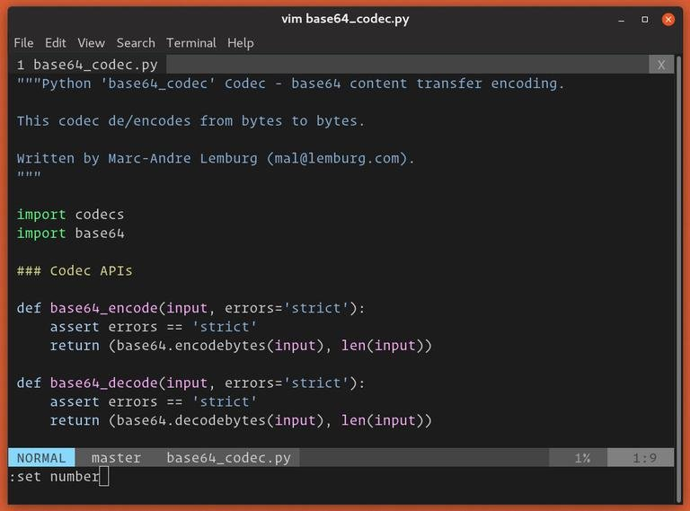
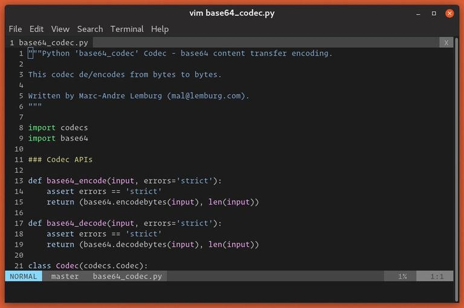
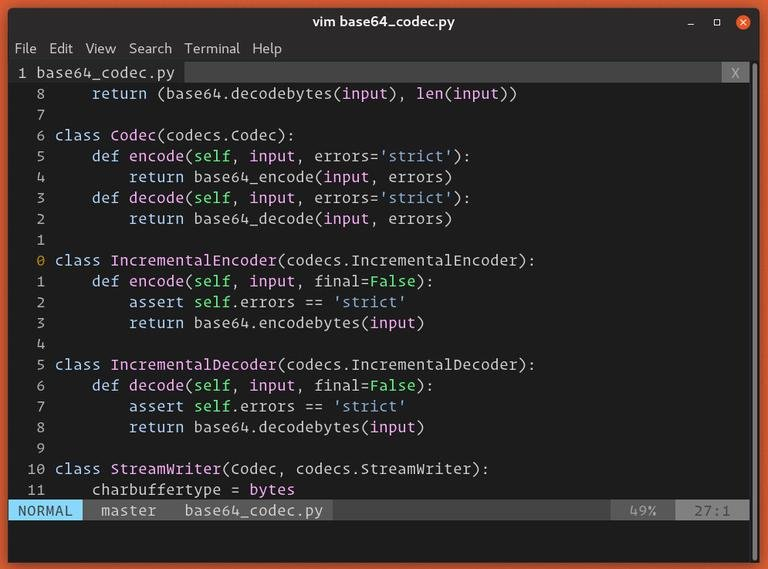
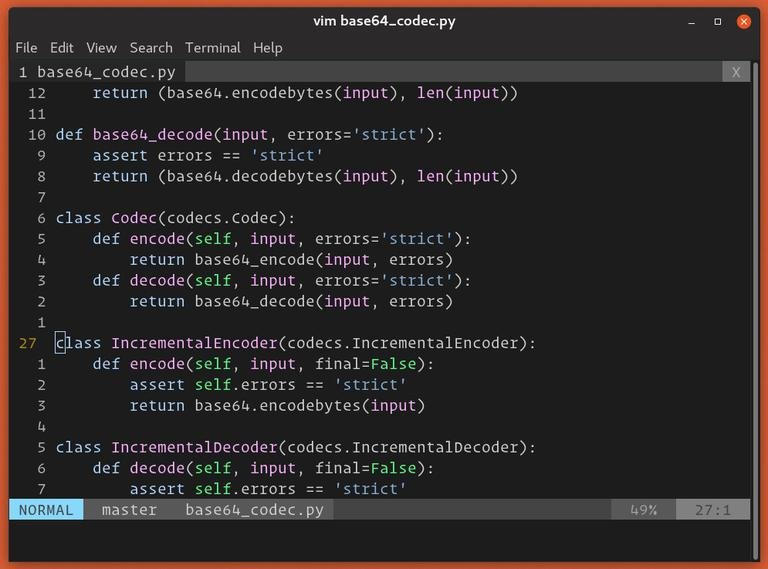

How to Show Line Numbers in Vim / Vi
Vim/Vi is the text editor of choice for many software developers and Linux system administrators.
By default, Vim doesn’t show line numbers, but they can be easily turned on. Vim supports three modes of line numbering that helps you navigate through the files. In addition to the standard absolute line numbering, Vim also supports relative and hybrid line numbering modes.
This article will show you how to display or hide line numbers in Vim / Vi text editor.
Besides helping navigate the code, line numbering is also useful in other situations such as pair programming, debugging scripts, code reviews, referring to a specific line, and more.
Absolute Line Numbers #
The absolute line numbering is the standard line numbering, which displays the appropriate line number next to each line of text.
-
Press the
Esckey to switch to command mode. -
Press
:(colon) and the cursor will move at the bottom left corner of the screen. Typeset numberorset nuand hitEnter.:set number
 -
Line numbers will be displayed at the left side of the screen:

To disable the absolute line numbers off, run the :set nonumber or set nonu commands:
:set nonumber
You can also toggle the line numbers with :set number! or :set nu!:
:set number!
Relative Line Numbers
When the relative line numbering is enabled, the current line is shown as 0; The lines above and below from the current line are incrementally numbered (1, 2, 3, etc.).
Relative line mode is handy because many Vim operations, such as moving up/down and deleting lines work on relative line numbers.
For example, to delete the next ten lines below the cursor, you would use the d10j command. With relative line numbers enabled you’ll have a better visual overview on the code.
To enable the relative line numbering, switch to the command mode and enter :set relativenumber or :set rnu:
:set relativenumber
To disable the relative line numbering, type :set norelativenumber or set nornu:
:set nonumber
To toggle the relative line numbering, use the :set relativenumber! or :set rnu! command:
:set number!
Hybrid Line Numbers
In Vim 7.4 and later, enabling both the absolute and relative line numbers at the same time sets up the hybrid line number mode.
Hybrid line numbering is the same as the relative line numbering with the only difference being that the current line instead of showing 0 shows its absolute line number.
To turn on the hybrid line numbering, run both the number and relativenumber commands:
:set number relativenumber
The same can be achieved by running the commands one by one:
:set number :set relativenumber
To disable the hybrid mode, you’ll need to turn off both the absolute and relative numbering.
Permanent Settings
If you want line numbers to appear each time you launch Vim, add the appropriate command to your .vimrc (Vim configuration file). For example, to enable absolute line numbering, you would add the following:
:set number| :set number | for regaul numbered lines |
|---|---|
| :set relativenumber | Relative Line Numbers |
| :set number relativenumber | Hybrid Line Numbers |